Статистическое моделирование (метод Монте-Карло)
Введение
Предложена методическая разработка темы с целью продемонстрировать насколько описываемый метод является мощным и универсальным инструментом для решения различных задач во многих областях знаний. Тема моделирования обычно изучается в школе на примере адекватного представления процессов (например, движения) по выбранным приближенным уравнениям. Статистическое моделирование, наоборот, не предполагает изначально знание математических связей и позволяет получить их на основе многократного наблюдения (компьютерной генерации) возможных событий в представленной модели.
Изучение данного материала возможно, например, на занятиях по подготовке к олимпиадам по программированию /1/. С этой целью выбрано часть задач, предложенных на олимпиадах по Ленинградской области.
Подборка задач позволяет совместное изучение темы школьниками различных классов, имеет игровой и занимательный характер, рассматривает применение и характеристики метода с различных сторон. В ходе разбора задач указаны некоторые приемы программирования, проводится начальное знакомство с важными понятиями теории вероятности, неразрывно связанной с данным методом. Для освоения темы приводятся задачи для самостоятельного решения с указаниями к получению правильных ответов.
Общая схема метода
Метод статистического моделирования или метод Монте-Карло назван так в честь столицы княжества Монако, известной своими многочисленными казино, в которых публика растрачивает или увеличивает свои доходы согласно законам распределения случайных величин.
Этот метод позволяет решать задачи, в условиях которых присутствует элемент неопределенности (например, при подбрасывании монеты может выпасть “орел” или “решка”). Пусть требуется найти некоторую величину (например, долю выпадения “орлов”). На ЭВМ с помощью генератора (датчика) случайных чисел (ДСЧ) имитируются ситуации или процессы, возможные по условию задачи, и которые приводят к тем или иным исходам, при этом искомая величина принимает некоторое значение (в нашем примере это 0 – если выпал “орел” и 1 – в противном случае). Все или почти все различные исходы (с учетом, когда монета может упасть на ребро) проявятся, если многократно рассмотреть случайное развитие одного и того же начального состояния (смоделировать некоторое количество историй — N).
Закон больших чисел «разыгрываемых» историй утверждает, что среднее арифметическое полученных в каждом розыгрыше значений исследуемой величины имеет предельное искомое значение (в нашей задаче оно равно 1/2).
Это вероятностная сходимость, т.е. чем больше историй, тем достоверней можно утверждать, что наш результат близок к истинному. Для задач с элементами неопределенности - а в реальном мире все задачи такие - это даже естественно. Погрешность определения предельного значения пропорциональна 1/√N. Таким образом, для увеличения точности результата на один порядок, требуется разыграть в 100 раз больше историй. «Разумно» число историй первоначально задавать порядка 10000.
Следовательно, требуется получать много случайных чисел так, чтобы переход от одного числа к другому определялся простыми правилами, но чтобы сами числа “производили впечатление случайности” (их называют поэтому псевдослучайными числами). Например, для выбора последовательности случайных цифр можно взять дробную часть числа пи (π = 3.14159265358979323846264338327950288 4197169399375105820974944592307816406286208998628034825342117… Представляет интерес обратное утверждение: возможно ли, что для любой конечной, наперед заданной последовательности цифр есть ее вложение в бесконечном представлении числа π). Данный способ, однако, мало приемлем для программирования. Как правило, при решении задач методом Монте-Карло используются процедуры, которые с помощью рекуррентных формул генерируют случайные числа, равномерно распределенные на промежутке [0, 1]. В Pascal для этого используется стандартная функция RANDOM. Для отладки программы бывает важно уметь воспроизвести псевдослучайные числа, а для генерации другой последовательности случайных чисел используется процедура RANDOMIZE.
Очень полезным для понимания данного метода является моделирование игровых вероятностных ситуаций (бросание монеты или кубика, блуждания). Именно «игровая» или связанная с чем-то знакомым (известным, «бытовым») формулировка задачи помогает лучше усвоить метод, осмыслить понятие вероятности.
Пример 1. (Районная олимпиада 1994).
Три игрока (с номерами 1, 2 и 3), имеющие изначально X, Y и Z жетонов соответственно, играют в следующую игру. В каждом раунде каждый игрок ставит на кон один жетон. Затем бросают кубик, на котором цифры 4, 5, 6 заменены на 1, 2 и 3. При выпадении числа i игрок с номером i забирает с кона все три жетона. Игра заканчивается, когда кто-нибудь из игроков проигрывает все жетоны. Введем функцию f(X, Y, Z), как среднюю длительность игры (среднее количество раундов) при заданных начальных капиталах X, Y, Z. Например, f(2, 2, 2) = 2. Ваша задача состоит в том, чтобы определить эту функцию. Для этого необходимо смоделировать игру на компьютере, накопить экспериментальные результаты, проанализировать их, а затем выдвигать гипотезы о виде функции f, проверять их для разных входных значений, и, отбросив неподходящие, найти решение.
Моделирование
игры не вызывает трудности (программа приведена ниже). Также очевидно,
что
вид
функции симметричен относительно порядка задания входных параметров
f(X,
Y,
Z) =
f(Y,
X, Z) и т.д.
Сложность задачи заключается в нахождении вида функции
f(X,
Y,
Z) = X · Y
· Z /
(X + Y +
Z - 2), так как результаты моделирования
определяются не точно.
var
i, n, Rounds: LongInt;
x, y, z, j: Integer;
a: array[0..2] of Integer;
begin
Write('x, y, z натуральные: '); ReadLn(x, y, z);
Write('Число историй (игр): '); ReadLn(n);
Rounds:=0; {число раундов в одной игре}
Randomize;
for i:=1 to n do {разыгрываем n историй развития начальной ситуации}
begin
a[0]:=x; a[1]:=y; a[2]:=z;
while a[0]*a[1]*a[2]<>0 do {моделируем игру, пока у всех игроков есть жетоны}
begin
Inc(Rounds);
for j:=0 to 2 do Dec(a[j]); {все игроки ставят по одному жетону}
Inc(a[Random(3)], 3); {а победитель берет все три жетона}
end;
end;
WriteLn('f(x,y,z) = ', Rounds/n:0:3); {среднее количество раундов}
end.
Данная задача достаточно хорошо характеризует метод Монте-Карло, а именно:
· Идею метода
- ожидаемый результат игры может быть оценен усреднением результатов большого числа игр (это число так и называется – математическим ожиданием или средним значением).
То есть результат приближенно равен числу 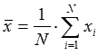,
где xi – результат игры i, а N- число всех проведенных игр (испытаний)
· Достоинство метода
- незнание a priori (до опыта) функциональных зависимостей исследуемой задачи в целом, выявление этих зависимостей a posteriori (после опыта).
· Недостатки метода
- неопределенное время расчета (варианты примера 1 при больших числах X, Y, Z);
- приближенное вычисление результата.
Последний недостаток компенсируется тем, что с использованием данного метода вместе со значением 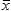 может одновременно определяться и его погрешность 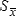 по формулам:
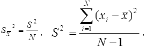
При больших N формулу можно упростить: 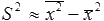, где 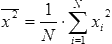
В пределах [ - , + ] с достоверностью 68.27% находится искомая величина, а в пределах ± 2 или ± 3 достоверность уже 95.45% и 99.73% соответственно. Поэтому метод по праву называют порой прецизионным или точным в смысле, что известна точность рассчитываемых величин, и это может служить точкой отсчета для проверки программ, использующих другие приближенные методы.
Иногда, чтобы избежать потери значащих цифр при суммировании, среднее значение определяется в программе после каждого испытания по формуле:
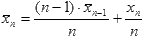
Так как программа с использованием метода Монте- Карло порой требует значительных временных затрат, целесообразно выводить на экран некоторую информацию о ходе ее решения во избежание мнимого эффекта «зависания», за исключением тех случаев, когда вывод на экран запрещен по условию задачи. Предпочтительно для описания целочисленных переменных, осуществляющих подсчет историй, использовать тип «длинное целое».
Метод Монте-Карло применяется для выбора наилучших стратегий в задачах, где присутствуют много случайных факторов.
Задача 1. «Лучшее пари для простаков». (Районная олимпиада 1997).
Игрок A выбирает комбинацию из цифр 0 и 1 длиной 3 знака (например, 001). Игрок B выбирает свою комбинацию (отличную от игрока A). Подбрасывается монета и записываются результаты бросания (например, 101101..., где 0 обозначает «орел», а 1 — «решка»). Игра прекращается в тот момент, когда в последовательности цифр на конце возникает комбинация, выбранная A или B (побеждает A или B соответственно). Игра повторяется.
а) Оценить шансы на выигрыш каждого из игроков R(A,B) (т.е. отношение числа выигрышей игрока B к числу выигрышей игрока A).
б) Для выбранной игроком A комбинации определить такую комбинацию для игрока B, которая ему дает больше шансов на выигрыш.
Ниже представлена таблица значений R(A,B) для всевозможных выбранных игроками A и B исходных комбинаций при «неограниченном продолжении» игры (выделены наиболее выигрышные ситуации для игрока B).
Пари является беспроигрышным (!) для игрока B. Парадокс заключается в том, что какую бы комбинацию цифр не выбрал игрок A, его соперник B может выбрать другую комбинацию, которая ему дает больше шансов на выигрыш.
Таблица R(A,B)
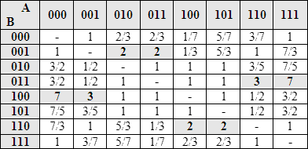
Указание. При решении задачи полученные результаты по пункту a) не будут совпадать с данными из таблицы, так как число опытов ограничено, тем не менее, позволяют дать качественный ответ по пункту б)
Метод Монте-Карло используется для определения вероятности наступления какого-либо события.
Задача 2.
Пусть дана ось с отмеченными на ней целочисленными точками. Предположим, что Чиполлино спрятался в точке 0, в точке N находится пропасть, и сыщик Моркоу находится в точке k (0 < k < N). Сыщик ищет Чиполлино случайным образом, блуждая по соседним целочисленным точкам. Если он попадет в точку 0, то найдет Чиполлино, а если попадет в точку N, то свалится в пропасть. С какой вероятностью сыщик найдет Чиполлино?
Под вероятностью какого-либо события (P) мы будем понимать предельное значение частоты события, а именно, отношения числа успешных (приведших к появлению данного события) испытаний (Nу) к общему числу проведенных испытаний (N), то есть P » Nу / N. Чем больше мы проведем испытаний, тем точнее (в идеале) мы определяем численное значение вероятности. Очевидно, что вероятность P удовлетворяет условию: 0 £ P £ 1.
Указание. Смоделируйте многократный поиск сыщика из точки k, доля удачных попыток от общего их числа дает приближенную оценку искомой вероятности. На основании этой оценки сформулируйте простую формулу для нахождения вероятности события (обозначим ее P0(k)), указанного в задаче.
Данную задачу можно решить точно, используя рекуррентную формулу:
P0(k) = P0(k-1)/2 + P0(k+1)/2 при
очевидных
условиях, что P0(0) = 1 и P0(N)=0, однако
использовать
рекурсию в такой форме неприемлемо, так как глубина рекурсии
неограниченна, что
ведет к переполнению стека и краху программы.
Упражнение 1.
Выведите рекуррентную зависимость P0(k+1) от P0(k), начиная с k = 0 и, используя известное значение P0(N), обратным ходом получите общее выражение для P0(k).
Задача 3.
Пусть имеется “однорукий бандит” – игровой автомат с ручкой, которой его запускают для игры. Считаем (для упрощения), что игра будет типа “в орлянку”, и игрок имеет начальный капитал в одну монету. Игра ведется до тех пор, пока игрок не обанкротится или выиграет N монет. Промоделировать игру для N=10, определить вероятность (шансы) игрока “сорвать указанный куш” и объяснить, почему автомат назвали “бандитом”.
Задача о разорении игрока аналогична задачи блуждания по отрезку [0, N] с той лишь разницей, что требуется определить вероятность PN(k) достичь точки N, находясь в точке k=1. Образно говоря, эти модели “связаны одной цепью”. Последовательность испытаний, в которой каждое следующее испытание зависит только от исхода предыдущего, называется цепью Маркова. Многие реальные явления (например, броуновское движение частиц, обслуживание телефонных линий) описываются данными вероятностными моделями /2/.
Метод Монте-Карло универсален и применим как для задач, в условиях которых присутствует элемент неопределенности, так и для полностью детерминированных задач.
Иногда трудно найти алгоритм или функциональные зависимости для решения сложных задач, однако возможно переформулировать условие задачи таким образом, чтобы использовать для нахождения решения метод Монте-Карло. При этом задача упрощается, но за это приходится “расплачиваться” временем решения и точностью результата.
Пример 2. (Областная олимпиада 2001).
Найти площадь пересечения трех окружностей с заданными радиусами и координатами центров окружностей.
Аналитические выкладки для определения площади пересечения достаточно сложны. Метод Монте-Карло позволяет приближенно вычислить площадь (объем) области, даже в том случае, когда имеется лишь возможностью определить, принадлежит ли точка данной области.
Переформулируем условие задачи. Опишем квадрат около одной из окружностей (например, меньшего радиуса). Будем случайным образом кидать точки в этот квадрат. При достаточно большом их количестве ($n$) они равномерно распределятся по площади квадрата. Часть из них (m) попадет в область пересечения трех окружностей. Можно ожидать, что отношение m/$n$ имеет конечный предел, равный отношению искомой площади к площади описанного квадрата (см. Упражнение 2).
Указание. Наилучший путь - это «использовать геометрию» для анализа частных случаев (когда нет пересечения, одна окружность внутри другой), а метод Монте- Карло - для общего случая.
label
NotInCircle;
var
i, n, m: LongInt;
j: Integer;
x, y, r, rr: array[1..3] of Real;
xp, yp, xmin, ymin, d: Real;
begin
for j:=1 to 3 do {вводим координаты центра и радиус трех окружностей}
begin
Write(j, '-я окружность (x y r): ');
ReadLn(x[j], y[j], r[j]);
rr[j]:=Sqr(r[j]); {вычислим квадраты радиусов - они будут часто использоваться}
end;
Write('Количество историй: '); ReadLn(n);
xmin:=x[1]- r[1]; {опишем квадрат около первой окружности}
ymin:=y[1]- r[1];
d:=r[1]*2;
m:=0;
Randomize;
for i:=1 to n do {в цикле по числу историй}
begin
xp:=Random*d+xmin; {бросаем случайным образом}
yp:=Random*d+ymin; {точки в выбранный квадрат}
for j:=1 to 3 do {проверяем, попадает ли точка в каждый круг}
if Sqr(xp-x[j])+Sqr(yp-y[j]) > rr[j] then goto NotInCircle;
Inc(m); {считаем количество точек, попавших сразу во все три круга}
NotInCircle:
end;
WriteLn('S = ', Sqr(d)*m/n:0:3); {результат, тем точнее, чем больше историй}
end.
Задача 4. Два цилиндра одинакового радиуса R=1 пересекаются под прямым углом. Найти объем V их общей части.
Указание. В журнале “Квант” (№2, 1988 г.) приводится геометрический формализм решения задачи: V = 16R3/3.
Задача 5. Оценить чего больше: несократимых или сократимых дробей.
Фривольное условие задачи предполагает строгую формулировку: какова вероятность того, что наудачу взятая дробь несократима?
Ответ достаточно сложен и равен 6/π2 = 0.6079...
(Н.Я. Виленкин. В таинственном мире бесконечных рядов. Квант №10, 1989)
Сформулируем условие иначе. Рассмотрим несократимые дроби вида a/b, где 1£ a, b £.N. Количество их f(N). Нужно найти предел f(N) / N2 для больших чисел N. Выберем случайные натуральные числа (не превосходящие фиксированного достаточно большого числа N) для числителя и знаменателя дроби. Повторяем «эксперимент» $n$ раз, подсчитывая количество (m) несократимых дробей, используя алгоритм Эвклида для нахождения наибольшего общего делителя числителя и знаменателя. Отношение m/$n$ дает оценку доли несократимых дробей.
Строго говоря, мы должны доказать, что характер соотношения не изменится при увеличении числа N. Мы же будем это предполагать во всех задачах, так как математические критерии, гарантирующие сходимость решения, известны в редких случаях. Сходимость можно проверять для различного числа испытаний (например, увеличивая в 10 раз). Важно, чтобы число историй по закону было “большим”.
Упражнение 2
Свойство равномерного распределения случайных чисел на отрезке [0,1] означает, что вероятность попасть очередному числу, сгенерированному ДСЧ, в любой выбранный отрезок из [0,1] равна длине этого отрезка (проверьте моделированием).
Поэтому смоделировать событие (обозначим его C), реализующееся с вероятностью P можно так: на единичном отрезке выбирается отрезок длины P, и если случайная точка попала в заданный отрезок, то считаем, что событие C произошло. Если есть несколько независимых событий, то им следует сопоставить непересекающиеся отрезки с длинами, соответствующими вероятностям событий.
Равномерность распределения точек по отрезку справедлива для большого числа сгенерированных случайных точек. Так, если мы разобьем единичный отрезок на k равных частей, то необходимо сгенерировать более 10·k случайных чисел, чтобы они распределились в каждой части примерно одинаково. Для k случайных точек получим совершенно иную картину распределения.
Пример 3.
На шахматную доску случайным образом бросают 64 зерна. Определить, как зерна по количеству распределятся в клетках.
Указание. Пронумеруем клетки шахматной доски от 0 до 63. Случайное попадание зерна на какую-либо клетку моделируем случайным выбором клетки с помощью датчика случайных чисел RANDOM(64).
const
Iterations = 10000;
var
Board: array[0..63] of LongInt;
Count: array[0..63] of LongInt;
i, j: LongInt;
begin
Randomize;
FillChar(Count, SizeOf(Count), 0);
for i:=1 to Iterations do
begin
FillChar(Board, SizeOf(Board), 0);
for j:=0 to 63 do Inc(Board[Random(64)]);
for j:=0 to 63 do Inc(Count[Board[j]]);
end;
for j:=0 to 10 do
WriteLn(j:2, ' ', Count[j]/Iterations:8:5);
end.
В результате моделирования оказывается, что вероятнее всего: 23 клетки останутся пустыми, на 24 клетках будет по одному зерну, на 12 клетках – по два, на 4 клетках – по три, на одной клетке – четыре.
Генератор случайных чисел можно использовать для построения различных геометрических объектов.
Приведем алгоритм построения простейшего лабиринта. Лабиринты служат основой многочисленных игровых программ и олимпиадных задач.
На плоскости чертится прямоугольник, задающий границы лабиринта. Внутри прямоугольника выбирается точка (координаты которой задаются случайным образом), не лежащая на ранее построенных границах. От точки в случайном направлении (вправо, влево, вверх, вниз) рисуется линия границы до пересечения с какой-либо другой линией. Чтобы проходы в лабиринте были одинаковой ширины, координаты точки задаются с заранее выбранным шагом (например, на целочисленной сетке). Построение лабиринта прекращается по нажатию клавиши <ESC> или когда выбраны все допустимые точки. Такой алгоритм построения не дает циклических путей в лабиринте и, следовательно, в нем всегда можно найти выход. На рис. 1 приведен вариант сгенерированного лабиринта.
Пример 4.
Построим лабиринт, используя приведенный выше алгоритм.
uses
Graph, Crt;
const
Step = 20; {шаг - размер клетки в пикселах}
Width = 30; {ширина лабиринта в клетках}
Height = 20; {высота лабиринта в клетках}
dx: array[0..3] of Integer = (1, 0, -1, 0); {смещения по горизонтали}
dy: array[0..3] of Integer = (0, -1, 0, 1); {и вертикали для четырех направлений}

Рис. 1
var
Driver, Mode: Integer;
x, y, n: Integer;
Wall: Boolean;
begin
Driver:=Vga; Mode:=VgaHi;
InitGraph(Driver, Mode, '');
{очертим границы лабиринта}
Rectangle(0, 0, Width*Step, Height*Step);
Randomize;
repeat
x:=Random(Width)*Step; {выбираем случайную точку}
y:=Random(Height)*Step;
if GetPixel(x, y)<>0 then Continue; {если она лежит на стене, пробуем заново}
MoveTo(x, y);
n:=Random(4); {выбираем случайное направление}
repeat {рисуется линия от текущей точки}
Inc(x, dx[n]*Step); {с заданным шагом и направлением}
Inc(y, dy[n]*Step);
Wall:=(GetPixel(x, y)<>0); {до ближайшей стенки}
LineTo(x, y);
until Wall;
until KeyPressed;
ReadKey;
CloseGraph;
end.
Упражнение 3
Преобразуйте алгоритм для построения лабиринта на квадратной сетке, где квадрат – есть часть стены (1) или коридора (0). Выведите матрицу лабиринта в файл, который можно использовать далее в задачах отыскания пути в лабиринте (например, на рисунке 1 из левого верхнего поля – в правое нижнее) или для создания игр- стратегий.
Задача 6.
На окружности задана точка, две другие точки выбираются на окружности произвольно. Какова вероятность, что треугольник с вершинами в этих точках – остроугольный? Смоделируйте задачу с помощью метода Монте-Карло.
Указание. Положение случайной точки на окружности можно задавать дугой в радианах от заданной фиксированной точки (например, против часовой стрелки). Тогда угол измеряется половиной дуги между его сторонами.
Используя геометрическую интерпретацию вероятности, можно наоборот свести задачу со случайными параметрами к простому соотношению некоторых величин /2/. Пусть α - дуга (в радианах) до вершины B треугольника от вершины A (рисунок 2), β - дуга до вершины С от точки A (0 < α, β < 2π). Треугольник будет остроугольным, если:
1) при β > α выполняется: α < π, β > π, β - α < π
2) при β < α выполняется: α > π, β < π, α - β < π
Эти условия определяют заштрихованную область на рисунке 3. Следовательно, искомая вероятность равна отношению площади этой области к площади квадрата разброса точек, то есть 1/4.
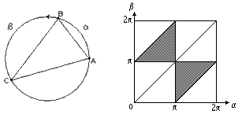
Рис. 2 &nbs p; ; &nbs p; Рис. 3
Необходимо обратить внимание на выбор подходящей вероятностной модели для адекватного представления поставленной задачи. Рассмотрим:
Пример 5.
В круге радиуса 1 берется наудачу хорда. Требуется определить вероятность того, что ее длина больше √3.
Построим три вероятностные модели:
М1. Положение хорды в круге однозначно задается ее серединой – моделируем случайный выбор середины хорды;
М2. Случайным образом выбираются две точки на окружности, задающие хорду;
М3. Из соображения симметрии фиксируем направление хорды, моделируем положение точки пересечения хорды с диаметром, перпендикулярным этому направлению
Разные модели дают разные ответы на поставленную задачу (парадокс Бертрана): 1/2, 1/3, 1/4 соответственно для М1, М2, М3 вследствие того, что случайный выбор хорды четко не определен в задаче.
Упражнение 4
Опишите геометрический способ решения задачи для перечисленных моделей.
Задача 7. «Салфетка Серпинского».
Возьмем произвольный треугольник и выберем любую точку внутри него. Следующей точкой выберем середину отрезка от заданной точки до произвольно выбранной вершины треугольника. Принимая полученную точку за исходную, продолжим процесс. Изобразите процесс графически.
Салфетку Серпинского можно нарисовать с помощью рекурсивного рисования средних линий треугольника. Оказывается, казалось бы «случайный» разброс точек также создает закономерное кружево как на рисунке 4.
Указание: Предусмотреть окончание задачи, например, по нажатию любой клавиши или генерации большого, но конечного числа точек.
Небольшое отступление от темы посвятим свойствам полученного объекта.
Если определить геометрическую размерность как размерность самоподобия по формуле ln(N)/ln(n), где N - число одинаковых частей, на которые разбивается данный объект, имеющий в n раз меньший пространственный размер, то для треугольной кривой Серпинского (как это видно из рисунка 4) имеем размерность ln(3)/ln(2) = 1.5849. Для объектов дробной размерности Мандельбротом введено понятие “фрактал” /3/.
Красота и простота фракталов завораживает исследователей и даже побуждает использовать самоподобие в музыке и поэзии - http://sites.netscape.net/rlbtftn/index.html.
С салфеткой Серпинского связана работа клеточного автомата, определяемая в следующей задаче.
Задача 8. Рассмотрим события, разворачивающиеся во времени в одномерном клеточном пространстве по следующим правилам. Определяется сумма значений пяти клеток (самой клетки и двух ближайших к ней слева и справа). На следующем шаге по времени в зависимости от суммы, которая может равняться 0, 1, 2, 3, 4, 5, клеткам присваивается значение 0, 1, 1, 1, 0, 0). Постройте на дисплее клеточный автомат, в котором каждая строка соответствует одному моменту времени.
Рис. 4
Эволюция клеточного автомата воспроизводит рисунок 4, подобный салфетке Серпинского.
Одномерные и многомерные клеточные автоматы явились прообразом параллельных вычислений в компьютере, они имитируют сложную структуру связей, которая наблюдается у нервных клеток мозга – нейронов, и породили новую технологию обработки информации – нейрокомпьютинг (Открытые системы, № 4(24), 1997г.).
Исследуем работу автомата для других правил. Пусть значение в клетке (модель нейрона) определяется по сумме только соседних клеток. Если сумма четна, то считаем воздействия скомпенсированными – значение равно 0 (покой), в противном случае – 1 (возбуждение).
Рис. 5
Упражнение 5
Проверьте, что распространение возбуждения от одиночной клетки дает картину расположения нечетных биномиальных коэффициентов в треугольнике Паскаля.
Указание. Треугольником Паскаля называется числовой треугольник, в котором по краям стоят единицы, а каждое число внутри равно сумме двух ближайших стоящих над ним чисел в строке сверху (рис.5).
Треугольник Паскаля связан с одним из фундаментальных законов распределения случайных чисел. Для начала, решим следующую задачу:
Задача 9.
Рис. 6
Промоделируйте работу прибора, указанного на рисунке 6. Дробинки, проходя через верхний канал и встречая препятствие, случайным образом продолжают свой путь вправо или влево. Определите среднее число дробинок, попавших в каждую ячейку, расположенную на выходе m-уровня препятствий (m=9), если в каждой серии используется 2m штук дробинок.
На рисунке 6 показано распределение дробинок по ячейкам (сравните с числами Паскаля!) в виде гистограммы, которая намечает вид кривой – кривой Гаусса, которая соответствует данной модели при бесконечно большом числе бесконечно малых препятствий и имеет функциональную зависимость типа exp(-x2).
В природе кривая Гаусса характеризует естественный закон распределения (“нормальное” распределение) случайных ошибок в серии измерений какой-либо величины. Проверим, насколько хорош наш датчик случайных чисел. Разобьем единичный отрезок на m (=10000) равных отрезков. Сгенерируем N (=1000000) случайных чисел. Подсчитаем, сколько точек (в среднем) попадет в каждый отрезок (k1, k2, ..., km) и насколько отличаются эти числа от идеального равномерного распределения, когда в каждый отрезок попадает в среднем N/m (=100) точек. Так называемая центральная предельная теорема в теории вероятности утверждает, что ошибки средних (dki) распределяются по нормальному закону. Промоделируем равномерное распределение точек на отрезке [0,1]
Пример 6
const
N = 1000000;
M = 10000;
K = 100; {=N/M}
var
Segment: array[0..M-1] of LongInt;
i: LongInt;
begin
Randomize;
Assign(Output, 'out.txt');
Rewrite(Output);
for i:=1 to N do
Inc(Segment[Random(M)]);
for i:=0 to M-1 do
WriteLn(i,' ', Segment[i]-K);
end.
В этой программе, как и в примере 3, использовался прием подмены моделируемых величин, применяемый для уменьшения трудоемкости программы: вместо генерирования случайной точки и поиска отрезка, куда она попала, выбирается случайным образом сам отрезок и считается, что точка попала куда-то в него.
В файл “output.txt” выводится номер отрезка и отличия dki (со знаком) от общего среднего. На рисунке 7 представлена диаграмма сводной таблицы, построенной с помощью Excel, где по горизонтальной оси отложены значения dki, сгруппированные с шагом 4, а по вертикальной оси – количество отрезков, у которых различие от среднего попадает в заданный интервал.
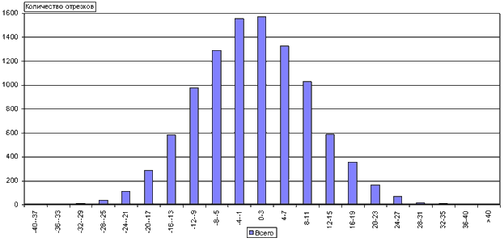
Рис. 7
Обычно приводят нормированные значения (делят на общее число точек N). В таком случае, говорят о кривой плотности распределения (на рисунке 8 приближенно представлен график кривой Гаусса).
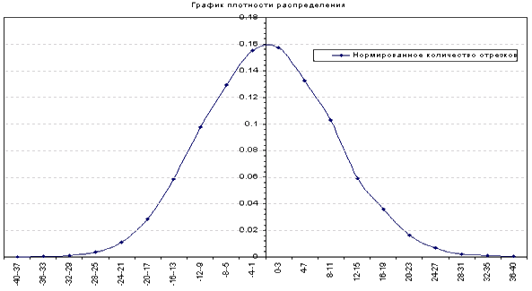
Рис. 8
Из рисунка 8 видно, что данные, подчиняющиеся нормальному закону распределения, “кучкуются” около некоторого среднего значения. Чем больше расхождение, тем меньшая доля данных, имеющих такое расхождение. По такому закону, например, распределяется количество школьников (одинакового возраста) по росту. Относительно группы, имеющих средний рост, очень мало слишком высоких или низких.
В некоторых задачах (например, моделировании траектории ядерной частицы при исследовании процессов в ядерном реакторе или в задаче поиска внеземных цивилизаций) требуется выбрать случайное пространственное направление от заданной точки (или, что равносильно, задать случайную точку на единичной сфере с центром в исходной точке).
Рис. 9
Приведем один из способов получения равномерного распределения точек на сфере. Так как три координаты связаны уравнением сферы, то в качестве независимых величин выберем координату Z и угол j, который определяет положение точки на круге, параллельном X-Y плоскости (на высоте Z) от оси X.
Алгоритм по шагам:
1. Выбираем точку z, равномерно распределенную на [-1,1].
2. Выбираем угол φ, равномерно распределенный на [0, 2·π).
3. Полагаем 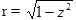.
4. Полагаем x = r · cos(φ).
5. Полагаем y = r · sin (φ).
Используя вышеизложенный алгоритм, на рисунке 9 графически изображены сгенерированные случайные точки на сфере, где темные точки расположены на “видимой” поверхности сферы (z ³ 0), а серые точки – на “невидимой” (z < 0).
Актуальная задача определения температуры во внутренней точке P0 однородного тела с известной температурой на границе может быть решена методом “блуждания по сферам” (подобно блужданиям по сетке в задаче 2). От заданной точки P0 последующая точка P1 выбирается случайным образом на максимальной (внутри исходного тела) сфере с центром в P0 и т.д. Процесс обрывается, если очередная точка попадает на границу (или ее малую окрестность). Граничное значение температуры добавляется в определение среднего результата для точки P0 и повторяется очередное моделирование пути.
Задача 10.
Температура to в любой точке (x, y, z) на поверхности однородного единичного шара постоянна и равна 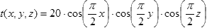
Определить температуру в центре шара.
Как видно из приведенных задач, метод Монте- Карло имеет широкое и эффективное применение, и не случайно он выбран многими авторами школьного курса информатики при изучении темы «Моделирование». Не менее важно также включать метод статистического моделирования в курс по подготовке школьников к олимпиадам по программированию.
Список литературы
1. Есипов А.С., Паньгина Н.Н., Громада М.И. Информатика (задачник).
Санкт-Петербург, “Наука и Техника”, 2001
2. Севастьянов Б.А. Вероятностные модели. М., “Наука”, 1992
3. Пайтген Х.-О., Рихтер П.Х. Красота фракталов. М., “Мир”, 1993